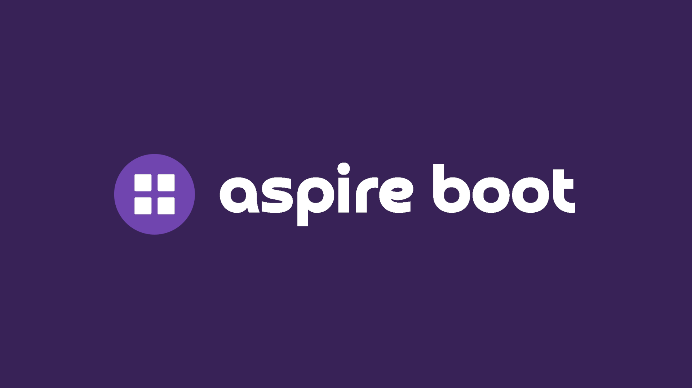
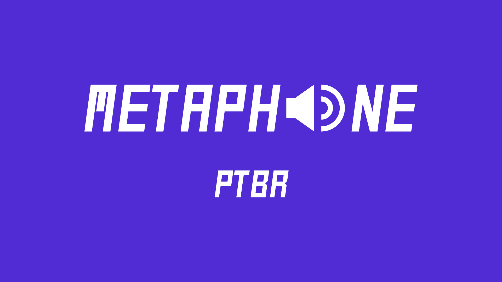

Pagamentos
Integrações com provedores, tokenização, fluxos transacionais, arquitetura de alta disponibilidade e entrega para produtos em que confiabilidade afeta receita e confiança.
Engenheiro de software sênior e team leader para sistemas de alta confiança
Lidero times e construo sistemas distribuídos para domínios próximos ao financeiro, onde disponibilidade, regulação, integridade transacional e disciplina de entrega precisam coexistir ao mesmo tempo.
Pagamentos
Integrações com provedores, tokenização, fluxos transacionais, arquitetura de alta disponibilidade e entrega para produtos em que confiabilidade afeta receita e confiança.
Sistemas distribuídos
Arquitetura limpa, DDD, APIs, workers, jobs agendados, mensageria, contêineres, observabilidade e comunicação resiliente entre serviços.
Liderança
Direção de time, mentoria técnica, planejamento de execução, alinhamento com stakeholders e ownership sobre fluxos críticos do negócio.
IA na engenharia
Atuação prática com machine learning e workflows agentic para aumentar efetividade da engenharia sem perder rigor.
Habilidades
Sou um engenheiro de software sênior e team leader com trajetória em pagamentos, logística, iniciativas de IA e sistemas distribuídos.
.NETC#ASP.NET Web APIArquitetura limpaDDDRESTgRPCMicroservices
AzureAKSOpenShiftDockerKubernetesHelmCI/CDObservabilidade
SQL ServerPostgreSQLMongoDBRedisRabbitMQAzure Service BusKafkaPadrões de mensageria
Liderança de timesMentoriaEntrega ágilStakeholdersGitHub CopilotClaudeGeminiWorkflows agentic
Experiência
Engenheiro de Software Sênior Team Leader
Ago 2024 até o momento · Grécia
Lidero engenheiros de software no domínio de pagamentos para a América Latina, entregando integrações com provedores financeiros e sustentando produtos que geram bilhões em valor transacionado anualmente.
O papel combina liderança técnica, planejamento multifuncional, suporte ao time e execução em um ambiente altamente regulado e de alta disponibilidade. Também estou conduzindo a adoção prática de IA, agentes e skills dentro da engenharia.
C# / .NET, SQL Server, Redis, HTTP, RabbitMQ, OpenShift, Grafana, Prometheus, Graylog, CI/CD, testes automatizados, Jira e GitLab.
Engenheiro de Software Sênior Team Leader
Jul 2019 a Ago 2024 · Brasil
Liderei o desenvolvimento de software do domínio de gestão de pedidos no Brasil, apoiando uma das maiores operações de logística terrestre do país e garantindo que pedidos estivessem prontos para faturamento e entrega em escala.
Também liderei uma das primeiras iniciativas de IA da companhia, usando redes neurais para sugerir automaticamente a quebra de pedidos e reduzir esforço manual, tempo e custo operacional sem perder eficiência logística.
C# / .NET, MongoDB, PostgreSQL, SQL Server, gRPC, HTTP, RabbitMQ, Service Bus, AKS, KEDA, Datadog, SonarQube, Snyk e Azure DevOps.
Projetos

Acelerador open source
Um template .NET Aspire totalmente funcional, criado para reduzir fricção inicial e permitir que times avancem direto para a lógica de negócio com uma base mais forte.
.NET AspireTemplate designProdutividade de desenvolvedores
Abrir projeto
Pacote especializado por idioma
Um algoritmo de transformação fonética para português brasileiro, empacotado para .NET com foco em reutilização prática.
.NET StandardProcessamento de textoPublicação de pacote
Ver pacoteCredenciais
FURB2019 a 2021
Pós-graduação em Data Science
SENAI2016 a 2018
Tecnólogo em Análise e Desenvolvimento de Sistemas
InglêsC2 Proficiente
Certificado pelo EF Standard English Test.
PortuguêsNativo
Fluência nativa para colaboração local e regional.
Claude AI
Anthropic · Jun 2026
Project Management Fundamentals
Udemy · Jun 2026 · Ver credencial
Kubernetes Certified Application Developer (CKAD) with Tests
Udemy · Jan 2026 · Ver credencial
MongoDB Data Modeling Path
MongoDB · Jan 2026 · Ver credencial
70-461, 761: Querying Microsoft SQL Server with Transact-SQL
Udemy · Jul 2025 · Ver credencial
Formação em Cibersegurança
Senai São Paulo · Mar 2024
Security Champions - Yellow Belt
AB InBev · Mar 2024
AZ-204T00--A: Developing Solutions for Microsoft Azure
Microsoft · Fev 2024
MongoDB C# Developer Path
MongoDB · Jan 2024 · Ver credencial
Datadog Fundamentals
Datadog · Dez 2023 · Ver credencial
Foundational C# with Microsoft
freeCodeCamp · Out 2023 · Ver credencial
Microsoft Certified: Azure Fundamentals
Microsoft · Jul 2020 · Ver credencial
English Level (C2 Proficient)
EF SET · Fev 2020 · Ver credencial
Desenvolvedor de Sistemas C#
ProWay · Set 2019
Roteamento e switching CCNA: Introdução às redes
Cisco Networking Academy · Abr 2019
Fundamentos da Gestão de TI
FGV Online · Mar 2018
Contato
Se você está contratando para posições sênior de back-end, plataforma, pagamentos ou liderança em engenharia, eu entrego profundidade técnica, ownership operacional e comunicação clara entre times.